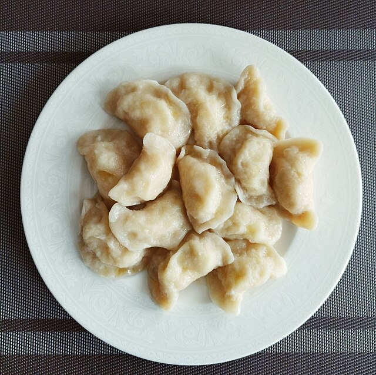

Pierogi

Pierogi is a traditional Polish dish that consists of boiled dumplings stuffed with various fillings.
Ingredients
For the dough
- 2 cups all-purpose flour
- 1 large egg
- 1/2 cup sour cream
- 1/4 cup unsalted butter, softened
- 1/2 teaspoon salt
For the filling
- 4 cups potatoes, peeled, boiled, and mashed
- 1 cup cheddar cheese, grated
- 1/2 cup onion, finely chopped and sautéed
- Salt and pepper to taste
Steps
Prepare the dough
- In a large bowl, combine the flour and salt.
- In a separate bowl, whisk together the egg, sour cream, and softened butter.
- Add the wet ingredients to the flour mixture and mix until a dough forms.
- Knead the dough on a floured surface until it becomes smooth.
- Wrap the dough in plastic wrap and let it rest in the refrigerator for at least 30 minutes.
Prepare the filling
- Boil the peeled potatoes until they are fork-tender. Mash them in a bowl.
- Add grated cheddar cheese and sautéed onions to the mashed potatoes.
- Season the filling with salt and pepper to taste. Mix well.
Assemble the Pierogi
- Roll out the chilled dough on a floured surface until it's about 1/8 inch thick.
- Use a round cookie cutter or a glass to cut out circles from the dough.
- Place a spoonful of the potato and cheese filling in the center of each dough circle.
- Fold the dough over the filling to create a half-moon shape, and press the edges to seal.
Cook the Pierogi
- Bring a large pot of salted water to a boil.
- Carefully drop the pierogi into the boiling water and cook until they float to the surface (about 3-5 minutes)
- Remove the pierogi with a slotted spoon and transfer them to a plate.
Optional: Pan Fry (for added crispiness)
- Heat a skillet with butter or oil over medium heat.
- Pan-fry the boiled pierogi until they are golden brown on both sides
Serve